먼저 생각해 보세요.
Ich möchte Ärztin werden. 여기서 werden은 어떤 뜻인가요?
werden은 '되다'예요. 직업 이름 앞에는 ein, eine를 쓰지 않아요.
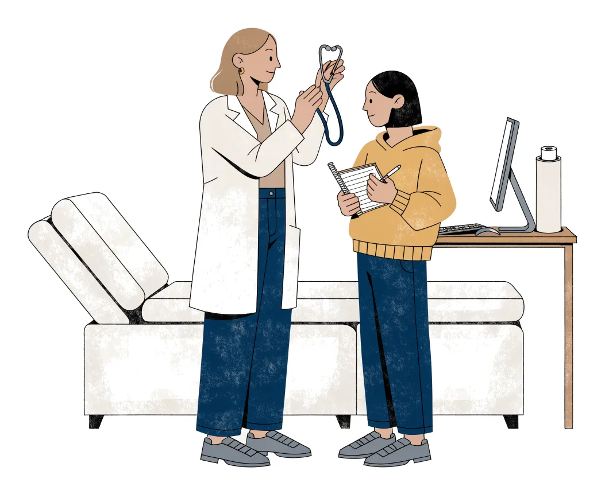
6월이에요. 8b 학생들은 지난주에 하루 동안 일터에 가서 직업을 체험했어요. Yuna는 병원에 갔어요. 오늘은 그날 이야기를 하고, 앞으로 무엇이 되고 싶은지 말해요.
눌러서 들어 보세요.
먼저 생각해 보세요.
Ich möchte Ärztin werden. 여기서 werden은 어떤 뜻인가요?
werden은 '되다'예요. 직업 이름 앞에는 ein, eine를 쓰지 않아요.
문법 werden (Ich möchte Ärztin werden.), Infinitiv mit zu, in zwei Jahren, nach dem Abitur
이 과를 마치면 독일의 학교 제도를 소개하고, 장래 희망을 말하고, 실습에서 한 일을 이야기할 수 있어요.
월요일 수업 시간이에요. 8b는 지난주에 하루 동안 실습을 했어요.
들으면서 찾아보세요. Lukas는 어디에서 실습했나요?
저녁 식탁이에요. Wagner 가족과 Yuna가 장래 이야기를 해요.
들으면서 찾아보세요. Yuna는 무엇이 되고 싶어 하나요?
두 대화를 듣고 답하세요.
Yuna는 실습하는 날 어디에 갔나요?
Wo war Lukas?
Elif hat Fotos für einen Artikel gesucht.
Warum findet Emma die Arbeit im Restaurant anstrengend?
Was möchte Emma werden?
Emma macht das Abitur in zwei Jahren.
Das Abitur mache ich in fünf Jahren.
Yuna는 앞으로 무엇을 할 계획인가요?
낱말 31개예요. 낱말이나 예문 앞의 단추를 누르면 소리가 나요. 명사는 der, die, das를 색으로 구분했어요.
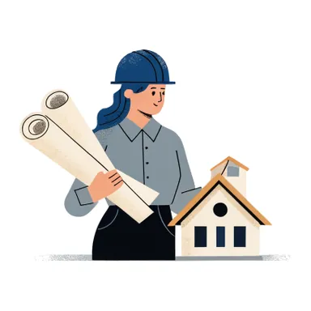
die Architektin, die Architektinnen (여자) 건축가
Emma möchte Architektin werden.Emma는 건축가가 되고 싶어 해요.
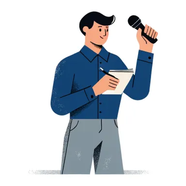
der Journalist, die Journalisten (남자) 기자
Der Journalist schreibt einen Artikel.기자가 기사를 써요.
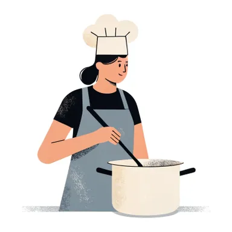
die Köchin, die Köchinnen (여자) 요리사
Die Köchin arbeitet im Restaurant.요리사는 식당에서 일해요.
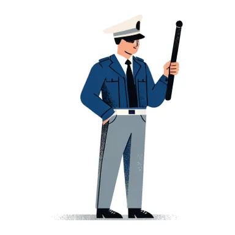
der Polizist, die Polizisten (남자) 경찰관
Der Polizist hilft den Kindern.경찰관이 아이들을 도와줘요.
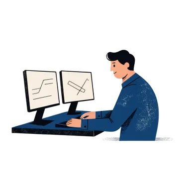
der Informatiker, die Informatiker (남자) 컴퓨터 전문가
Paul möchte Informatiker werden.Paul은 컴퓨터 전문가가 되고 싶어 해요.
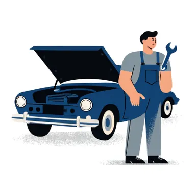
der Mechaniker, die Mechaniker (남자) 정비사
Der Mechaniker arbeitet in der Werkstatt.정비사는 정비소에서 일해요.
der Chef, die Chefs 상사, 사장
Der Chef ist nett.사장님은 친절해요.
der Kollege, die Kollegen (남자) 동료
Thomas kocht mit zwei Kollegen.Thomas는 동료 두 명과 함께 요리해요.
das Praktikum, die Praktika 실습
Ich mache ein Praktikum bei einer Zeitung.나는 신문사에서 실습을 해요.
die Ausbildung, die Ausbildungen 직업 교육
Can macht eine Ausbildung.Can은 직업 교육을 받고 있어요.
das Abitur 아비투어 (대학에 가려고 보는 졸업 시험)
Emma macht in fünf Jahren das Abitur.Emma는 5년 뒤에 아비투어를 봐요.
das Studium 대학 공부
Das Studium dauert sechs Jahre.대학 공부는 6년 걸려요.
studieren, hat studiert 대학에서 공부하다
Yuna möchte in Deutschland studieren.Yuna는 독일에서 대학에 다니고 싶어 해요.
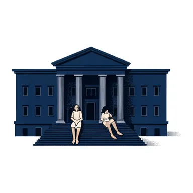
die Universität, die Universitäten 대학교
Die Universität ist in Köln.그 대학교는 쾰른에 있어요.
das Gymnasium, die Gymnasien 김나지움 (대학 진학을 준비하는 학교)
In Wien ist Paul aufs Gymnasium gegangen.Paul은 빈에서 김나지움에 다녔어요.
die Gesamtschule, die Gesamtschulen 종합 학교
Unsere Schule ist eine Gesamtschule.우리 학교는 종합 학교예요.
die Zukunft 미래, 장래
Was möchtest du in der Zukunft machen?앞으로 무엇을 하고 싶어?
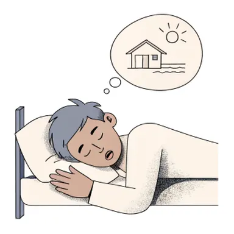
der Traum, die Träume 꿈
Mein Traum ist ein Haus am Meer.내 꿈은 바닷가에 있는 집이에요.
werden (du wirst, er wird) ~이 되다, ~해지다
Ich möchte Lehrerin werden.나는 선생님이 되고 싶어요.
die Arbeit, die Arbeiten 일
Die Arbeit macht mir Spaß.일이 재미있어요.
die Aufgabe, die Aufgaben 맡은 일, 과제
Das ist eine leichte Aufgabe.그건 쉬운 일이에요.
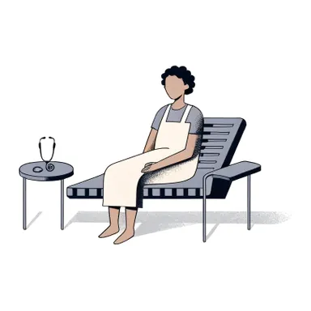
die Praxis, die Praxen (의사의) 병원, 진료실
Sabine arbeitet in einer Praxis.Sabine는 병원에서 일해요.
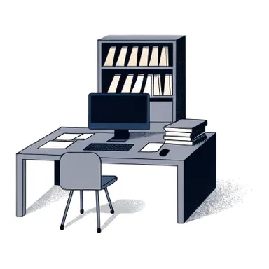
das Büro, die Büros 사무실
Mein Vater arbeitet im Büro.우리 아버지는 사무실에서 일해요.
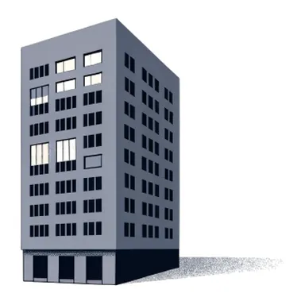
die Firma, die Firmen 회사
Die Firma ist groß.그 회사는 커요.
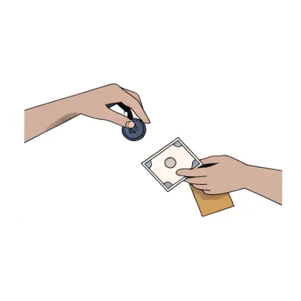
verdienen, hat verdient (돈을) 벌다
Can verdient noch nicht viel.Can은 아직 돈을 많이 벌지 못해요.
anstrengend 힘든, 고된
Die Arbeit ist anstrengend.그 일은 힘들어요.
wichtig 중요한
Die Schule ist wichtig.학교는 중요해요.
Spaß machen 재미있다
Kochen macht mir Spaß.나는 요리가 재미있어요.
Lust haben ~하고 싶다
Ich habe keine Lust.나는 하고 싶지 않아요.
vorhaben (du hast vor, er hat vor) ~할 계획이다
Was hast du morgen vor?내일 뭐 할 계획이야?
versuchen, hat versucht 해 보다, 애쓰다
Ich versuche, pünktlich zu sein.나는 시간을 지키려고 애써요.
이 과의 낱말로 여덟 문제를 풀어요.
예문을 보고 답해 보세요.
Ich möchte Ärztin werden. 에서 Ärztin 앞에 무엇이 있나요?
규칙
werden은 '~이 되다'라는 뜻이에요. 장래 희망을 말할 때는 möchten이나 wollen과 함께 쓰고, werden은 문장 맨 끝에 둬요. 직업 이름 앞에는 관사를 쓰지 않아요. du와 er, sie, es에서는 e가 i로 바뀌어요.
| 주어 | werden | 예문 |
|---|---|---|
| ich | werde | Ich werde bald fünfzehn. |
| du | wirst | Wann wirst du fünfzehn? |
| er, sie, es | wird | Can wird Mechaniker. |
| wir | werden | Wir werden Freunde. |
| ihr | werdet | Ihr werdet müde. |
| sie, Sie | werden | Sie werden Lehrer. |
주의 형용사와 함께 쓰면 '~해지다'라는 뜻이에요. Es wird kalt. Ich werde müde.
예문을 보고 답해 보세요.
zu와 동사 원형은 문장의 어디에 있나요?
규칙
Es ist …, Es macht Spaß, Ich habe Lust, Ich habe vor 같은 말 뒤에 '~하는 것', '~하기'를 붙일 때 zu와 동사 원형을 써요. zu와 원형은 맨 끝에 오고, 그 앞부분과는 쉼표로 나눠요. 분리 동사는 zu가 가운데로 들어가요.
| 앞부분 | zu + 원형이 있는 뒷부분 |
|---|---|
| Es ist anstrengend, | den ganzen Tag zu stehen. |
| Es macht Spaß, | mit Kindern zu arbeiten. |
| Ich habe Lust, | Fußball zu spielen. |
| Ich habe vor, | früh aufzustehen. |
| Ich versuche, | pünktlich zu sein. |
주의 möchten, wollen, können, müssen 뒤에는 zu를 쓰지 않아요. Ich möchte studieren. 하지만 Ich habe vor, zu studieren.
예문을 보고 답해 보세요.
in fünf Jahren은 언제인가요?
규칙
지금부터 얼마 뒤인지 말할 때는 in과 3격을 써요. 어떤 일이 끝난 다음을 말할 때는 nach와 3격을 써요. 복수 3격에서는 명사에 -n이 붙어요. zwei Jahre → in zwei Jahren.
| 표현 | 뜻 | 예문 |
|---|---|---|
| in einem Jahr | 1년 뒤에 | In einem Jahr spreche ich besser Deutsch. |
| in zwei Jahren | 2년 뒤에 | In zwei Jahren mache ich ein Praktikum. |
| nach dem Abitur | 아비투어를 본 뒤에 | Nach dem Abitur möchte ich studieren. |
| nach der Schule | 학교를 마친 뒤에 | Nach der Schule mache ich eine Ausbildung. |
| später | 나중에 | Später möchte ich in Berlin wohnen. |
주의 vor zwei Jahren은 '2년 전에', in zwei Jahren은 '2년 뒤에'예요. 둘을 바꿔 쓰지 않게 조심해요.
Elif가 오빠 Can 이야기를 해요. 듣고 답하세요.
Mein Bruder Can
Elif Mein Bruder Can ist neunzehn. Er war bis zur zehnten Klasse in der Schule.
Elif Jetzt macht er eine Ausbildung in einer Autowerkstatt. Er wird Mechaniker.
Elif Drei Tage in der Woche arbeitet er in der Firma und zwei Tage geht er in die Berufsschule.
Elif Die Arbeit macht ihm Spaß, aber es ist anstrengend, um sechs Uhr aufzustehen.
Elif In einem Jahr ist er fertig. Dann verdient er mehr Geld.
Was macht Can jetzt?
Was wird Can?
Can geht drei Tage in der Woche in die Berufsschule.
Drei Tage arbeitet er in der Firma und zwei Tage geht er in die Berufsschule.
Can은 무엇이 힘들다고 하나요?
Wann ist Can mit der Ausbildung fertig?
듣고 알맞은 것을 고르세요.
Lukas는 무엇이 되고 싶어 하나요?
Ich möchte Sportlehrer werden.
Emma는 언제 아비투어를 보나요?
In fünf Jahren mache ich das Abitur.
Yuna에게 무엇이 어려웠나요?
Es war schwer, am Telefon alles zu verstehen.
Elif는 무엇을 하고 싶지 않나요?
Ich habe keine Lust, im Büro zu arbeiten.
Yuna가 반 블로그에 실습 이야기를 썼어요. 읽고 답하세요.
Mein Tag in der Arztpraxis
Letzten Dienstag war mein Praktikumstag. Ich war in der Praxis von Sabine. Sie ist Ärztin.
Um halb acht hat die Arbeit angefangen. Zuerst habe ich Termine in den Computer geschrieben.
Dann hat mir Sabine alle Zimmer gezeigt. Später durfte ich am Telefon helfen.
Es war schwer, die Leute am Telefon zu verstehen. Sie sprechen so schnell!
Um eins war ich sehr müde. Aber der Tag hat mir gefallen. Ich habe Lust, noch einmal in der Praxis zu helfen.
Wo war Yuna am Praktikumstag?
Was hat Yuna zuerst gemacht?
Yuna konnte die Leute am Telefon gut verstehen.
Es war schwer, die Leute am Telefon zu verstehen.
Yuna는 그날이 어땠다고 하나요?
8b가 만든 장래 희망 표예요. 보고 답하세요.
Traumberufe in der 8b
| Name | Traumberuf | Warum? |
|---|---|---|
| Lukas | Sportlehrer | Sport macht Spaß. |
| Emma | Architektin | Sie mag Häuser. |
| Elif | Journalistin | Sie schreibt gern. |
| Paul | Informatiker | Er mag Computer. |
| Yuna | Ärztin | Sie hilft gern. |
Wer möchte Informatiker werden?
Elif möchte Architektin werden.
Elif möchte Journalistin werden.
Warum möchte Lukas Sportlehrer werden?
werden을 알맞게 써 보세요. 알맞은 말을 고르세요.
Ich möchte Ärztin .
Was du werden?
Can Mechaniker.
Emma möchte werden.
직업 이름 앞에는 관사를 쓰지 않아요.
Im Winter es früh dunkel.
Wir bald fünfzehn.
zu가 필요한지 보고 알맞은 말을 고르세요.
Es macht Spaß, mit Kindern .
Ich möchte in Deutschland .
möchten 뒤에는 zu를 쓰지 않아요.
Ich habe Lust, ins Kino .
Es ist anstrengend, früh .
분리 동사는 zu가 가운데로 들어가요.
Yuna hat vor, Ärztin .
Du musst mehr .
한국어 뜻을 보고 알맞은 말을 고르세요.
zwei Jahren mache ich ein Praktikum.
2년 뒤에 나는 실습을 해요.
dem Abitur möchte Emma studieren.
아비투어를 본 뒤에 Emma는 대학에 가고 싶어 해요.
einem Jahr ist Yuna nach Köln gekommen.
1년 전에 Yuna는 쾰른에 왔어요.
In fünf ist Lukas neunzehn.
5년 뒤에 Lukas는 열아홉 살이에요.
der Schule macht Can eine Ausbildung.
학교를 마친 뒤에 Can은 직업 교육을 받아요.
낱말을 순서대로 눌러 문장을 만드세요.
나는 의사가 되고 싶어.
아이들과 함께 일하는 건 재미있어.
나는 독일에서 대학에 다닐 계획이야.
아비투어를 본 뒤에 나는 대학에 가고 싶어.
낱말과 뜻을 짝지으세요.
듣고 그대로 써 보세요.
Was willst du werden? 뭐가 되고 싶니?
Ich möchte Ärztin werden. 저는 의사가 되고 싶어요.
Ich habe Lust, Häuser zu bauen. 저는 집을 짓고 싶어요.
Was willst du werden? 뭐가 되고 싶어?
Ich möchte Ärztin werden. 나는 의사가 되고 싶어.
Ich weiß es noch nicht. 아직 모르겠어.
Mein Traum ist … 내 꿈은 ~이야.
Nach der Schule möchte ich studieren. 학교를 마치면 대학에 가고 싶어.
Ich habe vor, eine Ausbildung zu machen. 나는 직업 교육을 받을 계획이야.
In zwei Jahren mache ich ein Praktikum. 2년 뒤에 실습을 해.
Ich war in einer Arztpraxis. 나는 병원에 갔어.
Ich hatte die Aufgabe, … zu … 나는 ~하는 일을 맡았어.
Es war interessant, … zu … ~하는 게 흥미로웠어.
Es macht Spaß, mit Kindern zu arbeiten. 아이들과 일하는 건 재미있어.
Es ist anstrengend, den ganzen Tag zu stehen. 하루 종일 서 있는 건 힘들어.
Das ist nichts für mich. 그건 나한테 안 맞아.
대화 B에서 역할을 하나 고르세요. 상대의 말은 음성으로 나오고, 내 차례에는 직접 말해요.
되고 싶은 것과 하고 싶은 일, 계획을 적으세요. 완성된 문장을 소리 내어 읽어 보세요.
Ich möchte Lehrerin werden.
Ich habe Lust, mit Kindern zu arbeiten.
Nach der Schule möchte ich in Seoul studieren.
Meine Zukunft
내 장래 희망과 계획을 소개하는 글을 써 보세요. 여섯 문장쯤 써요.
Ich möchte Lehrerin werden, weil ich gern mit Kindern arbeite. Es macht mir Spaß, anderen zu helfen. Aber es ist anstrengend, den ganzen Tag zu sprechen. Nach der Schule möchte ich in Seoul studieren. Ich habe vor, ein Jahr in Deutschland zu lernen. In zehn Jahren bin ich Lehrerin an einer Mittelschule.
다 쓴 뒤에 확인해 보세요.
Ich kann sagen, was ich werden möchte.무엇이 되고 싶은지 말할 수 있어요.
Ich kann von einem Praktikum erzählen.실습에서 한 일을 이야기할 수 있어요.
Ich kann das Schulsystem in Deutschland kurz erklären.독일의 학교 제도를 짧게 설명할 수 있어요.